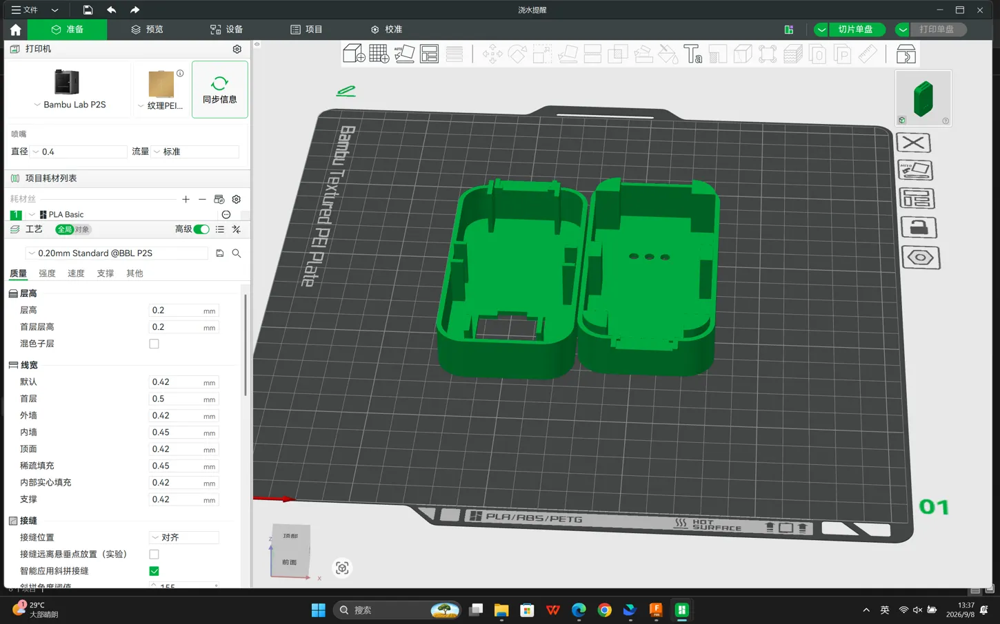
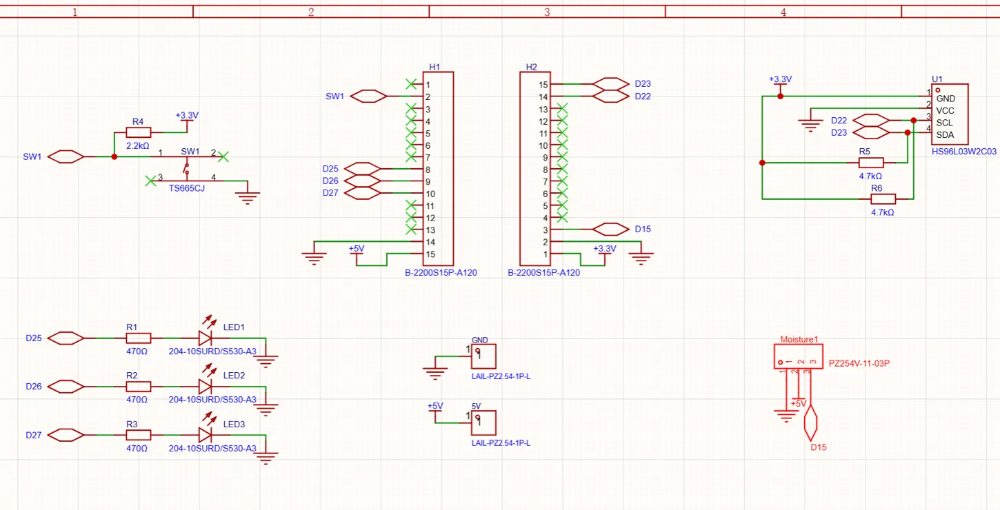
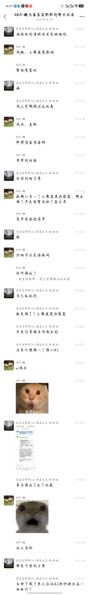

返回硬件项目索引
返回硬件项目索引植物渴了吗
阅读项目文档 ↓这份记录停留在中期调试阶段，项目目前已停止推进。





项目文档
项目介绍示例
项目介绍示例
项目概况
项目名称：植物渴了吗
mentor：骆佳静
项目简介
- 针对宿舍养护小盆栽无法直观判断土壤干湿、浇水过多 / 过少易养死绿植的痛点，搭建一个检测提醒装置：通过土壤湿度传感器采集数据，搭配 OLED 实时显示湿度数值，缺水时灯光警示，替代手指戳土、定时浇水的低效养护方式。
- 基础功能
- 土壤湿度实时采集
- OLED 屏幕持续显示当前土壤湿度数值
- 湿度低于阈值时，红色警示灯常亮
- 稳定 5V 供电
- 进阶功能
- 三色 LED 分级提示：绿（水分充足）、黄（轻度干燥）、红（严重缺水）
- 湿度持续过高时提示，防止烂根
- 防水外壳，适配阳台潮湿环境【？】
- 按键手动触发单次湿度检测，降低设备功耗
- 按键切换不同模式适应不同水分需求的植物【？】
项目成长
嵌入式代码
C++
include <Arduino.h>
include <Arduino.h>
include <Wire.h>
include <Adafruit_GFX.h>
include <Adafruit_SSD1306.h>
//引脚定义
define AO_PIN 15
define OLED_SDA 23
define OLED_SCL 22
define LED_RED 27
define LED_YELLOW 26
define LED_GREEN 25
define SW_PIN 36
//oled配置
define SCREEN_WIDTH 128
define SCREEN_HEIGHT 64
define OLED_RESET -1
define SCREEN_ADDRESS 0x3C
Adafruit_SSD1306 display(SCREEN_WIDTH, SCREEN_HEIGHT, &Wire, OLED_RESET);
// 校准值
const int DRY_VALUE = 3200; // 空气中的读数
const int WET_VALUE = 1430; // 水中的读数
//阈值
const float DRY = 30.0; // 低于此干燥
const float WET = 60.0; // 高于此湿润
//检测状态
bool sensorEnabled = false;//检测是否开启，初始未开启
bool lastButtonState = HIGH;//检测按键上一次状态，初始未按下
bool buttonState = HIGH;//检测按键此时状态，初始未按下
unsigned long lastDebounceTime = 0;
const unsigned long debounceDelay = 50;// 按键消抖
unsigned long lastSampleTime = 0;
const unsigned long sampleInterval = 200;// 采样
//初始化
void setup() {
Serial.begin(115200);
analogReadResolution(12);
pinMode(LED_RED, OUTPUT);
pinMode(LED_YELLOW, OUTPUT);
pinMode(LED_GREEN, OUTPUT);
turnOffLEDs();
pinMode(SW_PIN, INPUT_PULLUP);
pinMode(AO_PIN, INPUT);
//oled初始化
Wire.begin(OLED_SDA, OLED_SCL);
if (!display.begin(SSD1306_SWITCHCAPVCC, SCREEN_ADDRESS)) {
Serial.println("OLED 初始化失败！");
while (1);
}
// 上电时清屏
display.clearDisplay();
display.display();
}
//主循环
void loop() {
bool reading = digitalRead(SW_PIN); // 读取按键当前状态
if (reading != lastButtonState) { // 检测到按键状态发生变化
lastDebounceTime = millis(); // 记录状态变化时间
}
if (millis() - lastDebounceTime > debounceDelay) { // 状态稳定超过消抖时间
if (reading != buttonState) { // 稳定状态与之前保存状态不同
buttonState = reading; // 更新按键稳定状态
if (buttonState == LOW) { // 检测到按键按下
sensorEnabled = !sensorEnabled; // 切换检测状态
if (sensorEnabled) { // 如果开启检测
Serial.println(">>> 开始实时检测"); // 串口输出开始检测提示
lastSampleTime = 0; // 让程序立即进行一次检测
}
else { // 如果关闭检测
Serial.println(">>> 停止检测"); // 串口输出停止检测提示
turnOffLEDs(); // 关闭所有LED
display.clearDisplay(); // 清空OLED
display.display(); // 更新OLED显示
}
}
}
}
lastButtonState = reading; // 保存本次按键读取状态
if (!sensorEnabled) { // 如果检测功能没有开启
return; // 不执行后面的湿度检测
}
if (millis() - lastSampleTime >= sampleInterval) { // 判断是否到达下一次采样时间
lastSampleTime = millis(); // 更新采样时间
readAndDisplayHumidity(); // 读取湿度并更新LED和OLED
}
}
//检测细节
void readAndDisplayHumidity() {
int raw = analogRead(AO_PIN); // 读取传感器ADC原始值
float humidity = map(raw, WET_VALUE, DRY_VALUE, 100, 0); // 将ADC值转换为0~100%湿度
humidity = constrain(humidity, 0.0, 100.0); // 限制湿度范围在0~100%
Serial.print("Raw: "); // 输出ADC原始值
Serial.print(raw);
Serial.print(" · Humidity: "); // 输出湿度
Serial.print(humidity, 1);
Serial.println("%"); // 输出百分号并换行
turnOffLEDs(); // 每次检测前先关闭所有LED
if (humidity < DRY) { // 湿度低于30%
digitalWrite(LED_RED, HIGH); // 点亮红色LED
}
else if (humidity > WET) { // 湿度高于60%
digitalWrite(LED_GREEN, HIGH); // 点亮绿色LED
}
else { // 湿度在30%~60%之间
digitalWrite(LED_YELLOW, HIGH); // 点亮黄色LED
}
display.clearDisplay(); // 清空OLED显示
display.setTextColor(SSD1306_WHITE); // 设置文字颜色为白色
display.setTextSize(1); // 设置标题文字大小
display.setCursor(25, 0); // 设置标题位置
display.print("SOIL MOISTURE"); // 显示标题
display.setTextSize(3); // 设置湿度数字大小
display.setCursor(15, 16); // 设置湿度显示位置
display.print((int)humidity); // 显示湿度整数值
display.print("%"); // 显示百分号
display.setTextSize(1); // 设置状态文字大小
display.setCursor(30, 52); // 设置状态文字位置
if (humidity < DRY) { // 湿度低于30%
display.print("STATUS: DRY"); // OLED显示干燥状态
}
else if (humidity > WET) { // 湿度高于60%
display.print("STATUS: WET"); // OLED显示湿润状态
}
else { // 湿度在30%~60%之间
display.print("STATUS: NORMAL"); // OLED显示正常状态
}
display.display(); // 更新OLED显示
}
//LED全关函数
void turnOffLEDs() {
digitalWrite(LED_RED, LOW); // 关闭红色LED
digitalWrite(LED_YELLOW, LOW); // 关闭黄色LED
digitalWrite(LED_GREEN, LOW); // 关闭绿色LED
}
电路原理图
机械结构
调试与迭代过程
用面包板连接实现最基础的电路
初代板子（集大成者）
此时还是有蜂鸣器的，后来觉得太吵不实用故去除
AI使用说明
交流与心得
交流
心得
构思的时候觉得挺简单的，功能清晰，等到真正开始做的时候，每个细节都不能放过，外壳怎样和板子更吻合，板子怎样能空间利用最高，传感器的模拟输出怎么转化为百分比，按键功能的开发等等问题都需要一个一个去解决。
这是一个长期需要耐心与精力投入，不断迭代改造的过程，而不是像期末周赶工速成（bushi）